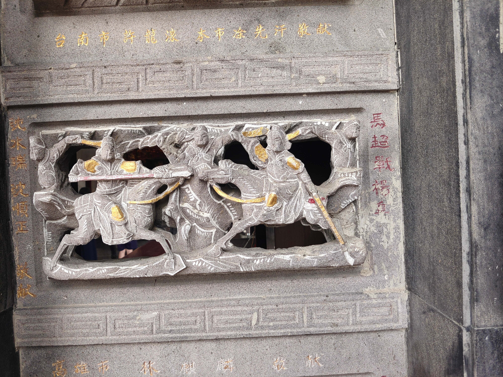

馬超戰楊阜
會說話的石頭

圖 馬超戰楊阜
建安十八年八月，駐守在冀城的涼州刺史韋康等人向馬超投降，結果被殺。楊阜想反叛馬超，為故主韋康復仇。他對馬超稱自己喪妻，請假辦喪事。途中他向駐扎在歷城的表兄天水人撫夷將軍姜敘求援，姜敘在老母（即楊阜舅母）鼓勵下，與同郡參軍事趙昂、尹奉、武都人李俊等合謀，楊阜亦結交鄉人姜隱、姚瓊、孔信、武都人王靈共討馬超，又使從弟楊謨等至冀城告訴被馬超拘禁的從弟楊岳，並結交安定人梁寬、南安人趙衢、龐恭等為內應。薑母願為此事捨身，要姜敘不要為孝所累。 此時馬超要挾趙昂為自己效力，留其嫡子趙月為質子，但依然不是很信任趙昂。馬超妻楊氏聽說趙昂妻王異是個有品德的人，於是請她和自己一起喝酒吃飯。王異趁機取信於楊氏，與其相交，趙昂也因而為馬超所信。趙昂已與楊阜定計，對王異說：「我們如此謀劃，必然萬全，但趙月怎麼辦？」王異厲聲答為了忠義雪恥，喪命都不要緊，何況一個兒子？並舉項託、顏淵雖短命卻存義於世的例子，趙昂認可。 楊阜等人定計後，九月，楊阜、姜敘進兵入鹵城，趙昂、尹奉據祁山以討馬超。馬超聞之大怒，趙衢趁機按姜敘母事先定下的計策，勸馬超親自出擊。馬超與馬岱、龐德離城前去平叛，趙衢、梁寬即釋放楊岳，閉冀城門，殺馬超妻兒。 馬超不能克鹵城，撤回冀城，不得入，失據，過鹵城，又到歷城，當時傳聞馬超已奔漢中，故歷城無防備，卻以為姜敘軍回來了，馬超入城抓住姜敘老母，被其大罵，怒殺之，又殺姜敘子，燒城而去。 楊阜在戰鬥中五次被馬超所傷，同族兄弟七人被殺。馬超隨後與馬岱、龐德南奔漢中軍閥張魯，後又殺趙月。
資料來源：https://reurl.cc/yAQ748